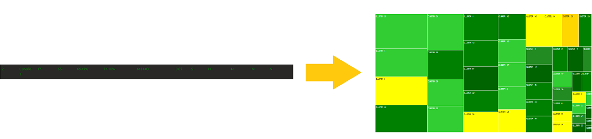

No grid abaixo estão o resultado de todas as execuções do algoritmo de agrupamento. Mais informações sobre o algoritmo de agrupamento, estão no documento sobre o método. As execuções que tiveram os melhores resultados, estão em destaque no grid. Sendo elas as execuções 17 e 18.
Para explorar os dados de cada execução, é necessário clicar na linha da grid.
